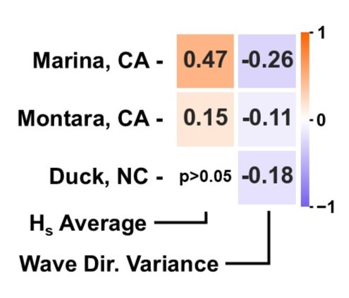

Megacusp Embayment in Monterey Bay and Beyond
Kelby B. Kramer and Tom W. Bell
Contact: kelbyh2o@mit.edu
A series of megacusp embayments just north of Marina State Beach in Monterey Bay, CA.
1. What are Megacusp Embayments?
Rip current embaymentsare erosional features in the beach face at the shoreward head of rip current channels. Under the right wave and tide conditions, namely consistent swell at a shore normal incident angle, very large "megacusp" embayments or MCE (Fig. 1) can form with alongshore lengths ranging from 100-1000m and cross-shore amplitudes exceeding 50m.3,10,11
Figure 1. (right) Aerial view of a typical MCE structure in Monterey Bay,CA. Alongshore sandbars are split by deep rip current channels with MCE at their heads.
2. Episodic Extreme Erosion Events
While MCE are transient, O(days-months), during large wave events, energy can be focused at embayment heads leading to extreme erosion hotspots.11 Understanding MCE formation and tracking their occurrence in near real-time could improve coastal resilience planning and pre-storm preparation.
Figure 2. (left) A post-storm erosion scarp O(10m) at the head of an MCE in Lacanau, France (Ph. Julien Lestage).2
3. Goals and Data - Can we "See" MCE?
MCE have been studied using a variety of methods (Fig. 3). PlanetScope provides near-daily imagery of any beach at a 3m pixel resolution. This work seeks to:
(I) Determine if MCE are detectable using PlanetScope imagery.
(II) Compare wave conditions causing MCE formation to previous findings.
(III) Explore the potential value of an expanded MCE dataset.
Figure 3. (right) Spatial-temporal comparison of previous MCE study methods.12
3.1 Imagery and Wave Data
Three sites, Marina, CA (Monterey Bay), Montara, CA, and Duck, NC were selected for varied beach and wave conditions.
Six years (Sep. 2017-Sep. 2023) of imagery was used to generate >600 “shorelines” per site, ~1 every 3-4 days on average.
Nearshore wave data is from the Coastal Data Information Program Monitoring and Prediction System (CDIP MOP) and the Wave Information Study (WIS) for Marina/Montara (15m depth) and Duck (24m depth) respectively.
3.2 Wave Data Processing
For each date that a shoreline was detected at a given site, the average and variance of the wave parameters (significant wave height Hs, mean period Ta, peak period Tp, and mean wave direction) of the five prior days were calculated to approximate rough antecedent conditions for comparison with compiled shoreline MCE metrics.
4. Shoreline Processing, MCE Identification, and Metrics
Data processing steps for each site are shown in Figures 4, 5, and 6 (below)
A - CoastSat PlanetScope4 is used to generate satellite-derived shorelines
B - Shorelines are rotated and coordinates are converted for processing
C - Shorelines are straightenedusing a quadratic fit11 of all >600 shorelines
D - Automated cleaning of anomalies, tails, and short chains is preformed
E - Bandpass filters3 are applied to remove signal above/below thresholds
F - Peaks/minima are identified and MCE are filtered by size thresholds
G - Measurements3 are recorded for each MCE present
H - MCE statistics are aggregated for each shoreline to create metrics
5. Wave Forcing Findings
Preliminary analysis of correlations between antecedent wave conditions and MCE metrics agree well with previous studies.10,11 Waves from a consistent direction generated numerous large MCE at Marina and Montara. At Duck, where wave direction is rarely consistent, MCE were only observed sporadically. Spearman correlation found the Hs average was positively correlated with all metrics at Marina and Montara and that mean wave direction variance was negatively correlated with all metrics at all sites. Notably, if wave direction is shore normal, MCE appear to scale with Hs unbounded.
Figure 7. (right) Spearman correlation between the area magnitude metric and two wave conditions for all three sites. Marina showed the strongest correlations for all metric-wave condition pairs.
6. Discussion & Next Steps
Drone field work to quantify MCE identification uncertainty is ongoing (Fig. 8). In future work, wave parameters will be shoaled to shore to better resolve the relationship between forcings and metrics as MCE scale differences were observed over <1km at Marina. The effects of individual storm events will be quantified along with tracking of individual MCE evolution. While there is a clear seasonal trend at Montara and Marina (Fig. 9), significant yearly variation is evident, raising questions about the influence of climactic patterns. Finally, additional sites with varying wave conditions will be added to further strengthen the analysis.
Fig. 8.(below) PlanetScope (top) and drone (bottom) imagery taken <1s apart during a ~20 minute drone timelapse.
Figure 9. (below) Area magnitude metric for 4 years of shoreline detections (points) and their 10-sample rolling average (lines) for the Marina, CA site.
Please reach out if you have questions or ideas! Contact: kelbyh2o@mit.edu
7. Thank You!
Thank you to Kyle Cavanaugh, Kate Cavanaugh, and Lori Berberian of UCLA for help accessing PlanetScope imagery!
Thank you to WHOI’s COFDL group for thoughtful comments along the way and to Tori Chen for editing help!
And BIG thank you to NASA SARP for funding my AGU travel!
8. Citations
[1] Birrien, F., Castelle, B., Dailloux, D., Marieu, V., Rihouey, D., & Price, T. (2013). Video observation of megacusp evolution along a high-energy engineered sandy beach: Anglet, SW France. Journal of Coastal Research, 1727–1732. https://doi.org/10.2112/SI65-292.1
[2] Castelle, B., Marieu, V., Bujan, S., Splinter, K. D., Robinet, A., Sénéchal, N., & Ferreira, S. (2015). Impact of the winter 2013–2014 series of severe Western Europe storms on a double-barred sandy coast: Beach and dune erosion and megacusp embayments. Geomorphology, 238, 135–148. https://doi.org/10.1016/j.geomorph.2015.03.006
[3] Dalon, M. M., Haller, M., & Allan, J. (2007). Morphological Characteristics of Rip Current Embayments on the Oregon Coast. Coastal Sediments ’07, 2137–2150. https://doi.org/10.1061/40926(239)168
[4] Doherty, Y., Harley, M. D., Vos, K., & Splinter, K. D. (2022). A Python toolkit to monitor sandy shoreline change using high-resolution PlanetScope cubesats. Environmental Modelling & Software, 157, 105512. https://doi.org/10.1016/j.envsoft.2022.105512
[5] Holman, R. A., Symonds, G., Thornton, E. B., & Ranasinghe, R. (2006). Rip spacing and persistence on an embayed beach. Journal of Geophysical Research: Oceans, 111(C1). https://doi.org/10.1029/2005JC002965
[6] List, J. H., Farris, A. S., & Sullivan, C. (2006). Reversing storm hotspots on sandy beaches: Spatial and temporal characteristics. Marine Geology, 226(3–4), 261–279. https://doi.org/10.1016/j.margeo.2005.10.003
[7] Loureiro, C., Ferreira, Ó., & Cooper, J. A. G. (2012). Extreme erosion on high-energy embayed beaches: Influence of megarips and storm grouping. Geomorphology, 139–140, 155–171. https://doi.org/10.1016/j.geomorph.2011.10.013
[8] Matsumoto, H., Young, A. P., & Guza, R. T. (2020). Cusp and Mega Cusp Observations on a Mixed Sediment Beach. Earth and Space Science, 7(10), e2020EA001366. https://doi.org/10.1029/2020EA001366
[9] McCarroll, R. J., Brander, R. W., Turner, I. L., & Leeuwen, B. V. (2016). Shoreface storm morphodynamics and mega-rip evolution at an embayed beach: Bondi Beach, NSW, Australia. Continental Shelf Research, 116, 74–88. https://doi.org/10.1016/j.csr.2016.01.013
[10] Orzech, M. D., Reniers, A. J. H. M., Thornton, E. B., & MacMahan, J. H. (2011). Megacusps on rip channel bathymetry: Observations and modeling. Coastal Engineering, 58(9), 890–907. https://doi.org/10.1016/j.coastaleng.2011.05.001
[11] Thornton, E. B., MacMahan, J., & Sallenger, A. H. (2007). Rip currents, mega-cusps, and eroding dunes. Marine Geology, 240(1), 151–167. https://doi.org/10.1016/j.margeo.2007.02.018
[12] Vitousek, S., Buscombe, D., Vos, K., Barnard, P. L., Ritchie, A. C., & Warrick, J. A. (2023). The future of coastal monitoring through satellite remote sensing. Cambridge Prisms: Coastal Futures, 1, e10. https://doi.org/10.1017/cft.2022.4